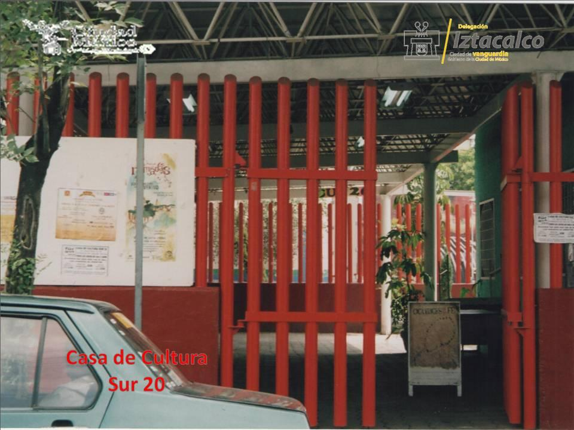
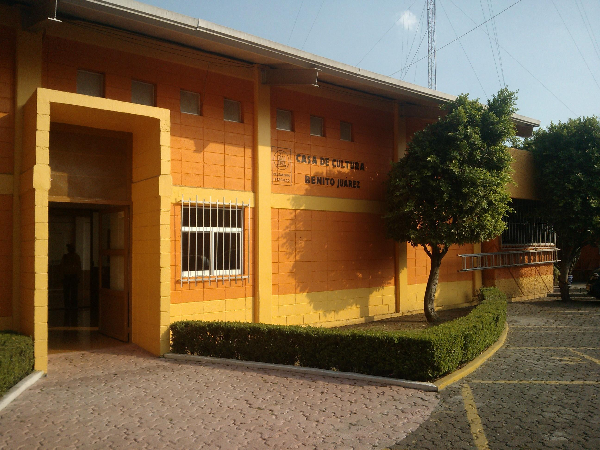
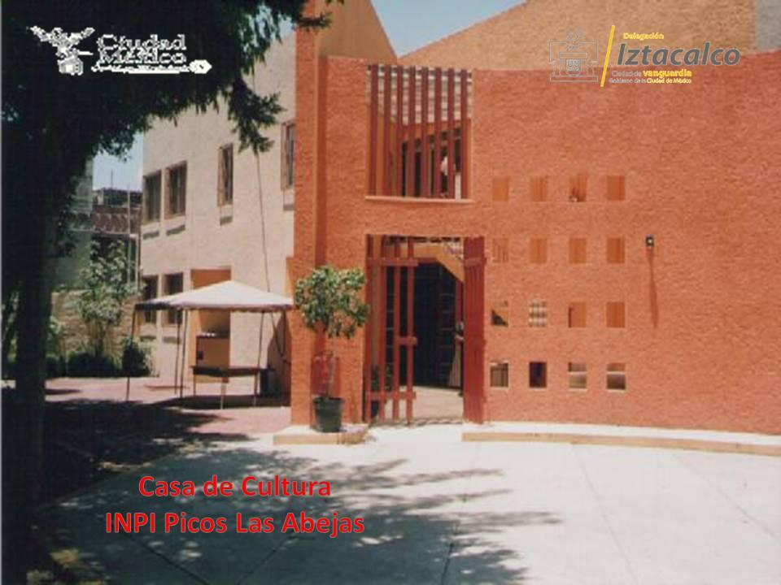
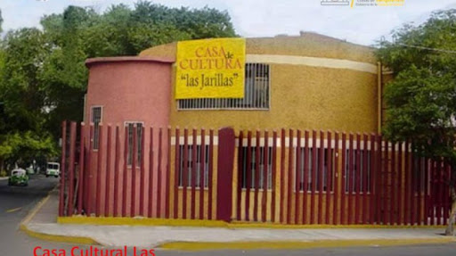

En esta alcaldia ubicaremos un total de 12 museos, podremos observar que cuenta con mas casas de cultura que a diferencia de otras alcaldías de la CDMX.

Casa de Cultura Sur 20
Alcaldía Iztacalco.
Oriente 229 s/n esq. Av. Sur 20
Col. Agrícola Oriental
CP 08500
Iztacalco, Ciudad de México
Tels.: (55) 5803 0000, 5654 3133, 5654 3333, 5657 0007 ext. 2508

Casa de Cultura Benito Juárez
Alcaldía Iztacalco.
Av. Té s/n, Plaza Benito Juárez
Col. Gabriel Ramos Millán
CP 08000
Iztacalco, Ciudad de México
Tels.: (55) 5654 3133 ext. 2427

Casa de Cultura Inpi Picos (Las Abejas)
Federico G. Bating s/n
Col. Inpi Picos
CP 08000
Iztacalco, Ciudad de México
Tels.: (55) 5648 4678

Casa de Cultura Las Jarillas
Alcaldía Iztacalco.
Lateral de Plutarco Elías Calles s/n esq. Sur 109
Col. Gabriel Ramos Millán
CP 08720
Iztacalco, Ciudad de México
Tels.: (55) 5648 5005, 5649 5005